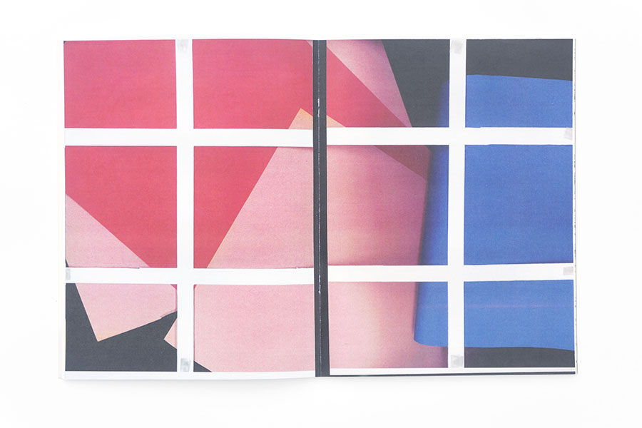
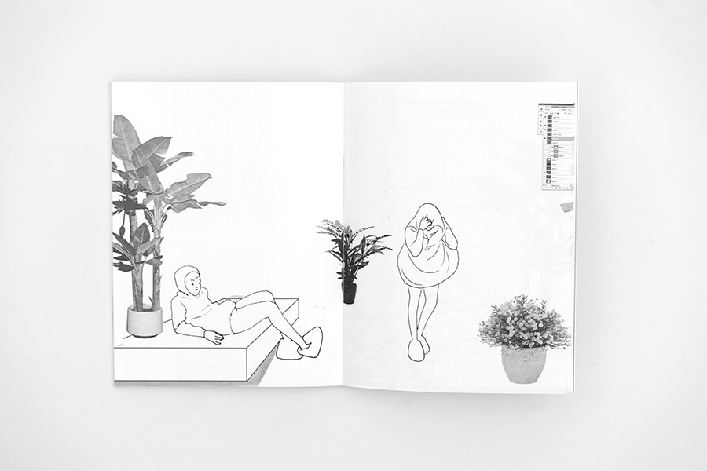
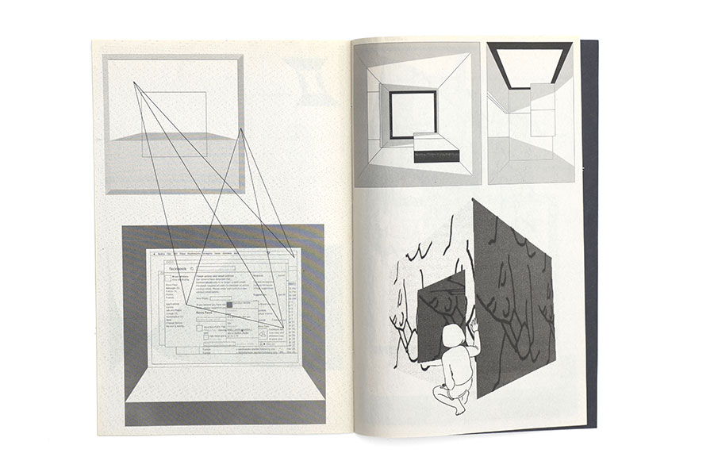
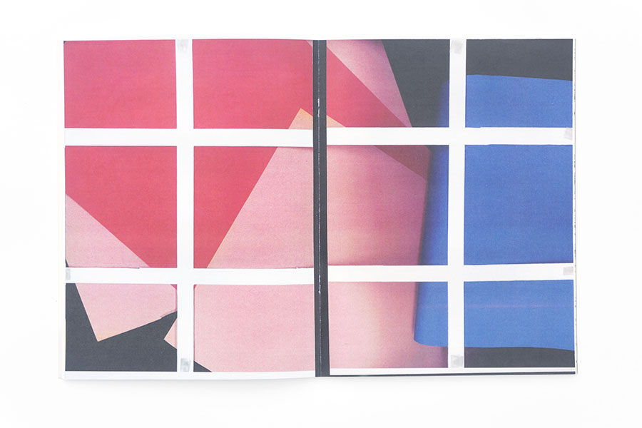
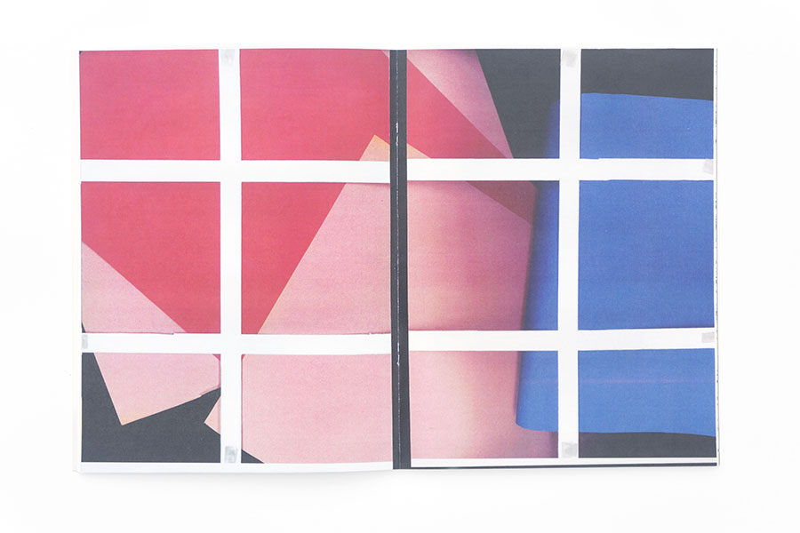
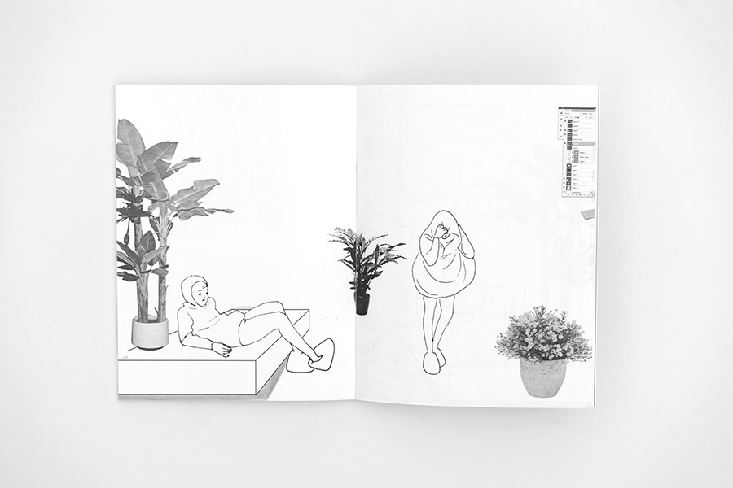
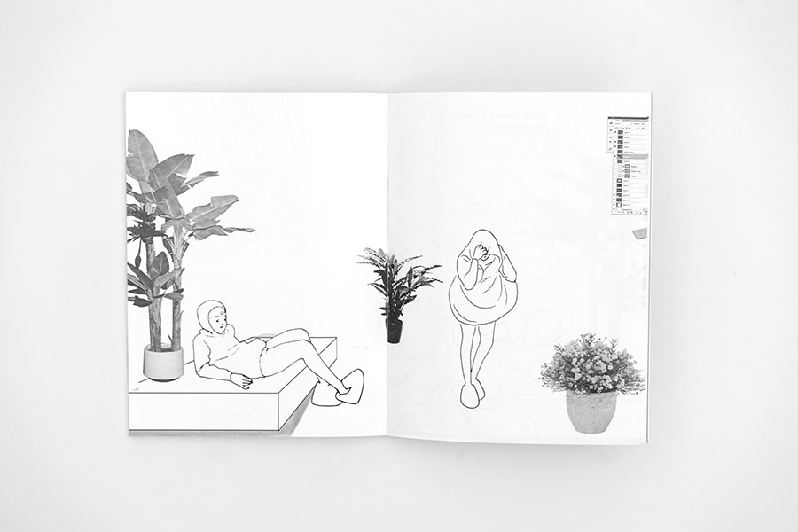
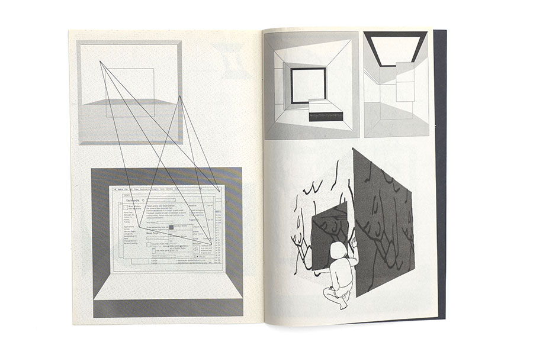
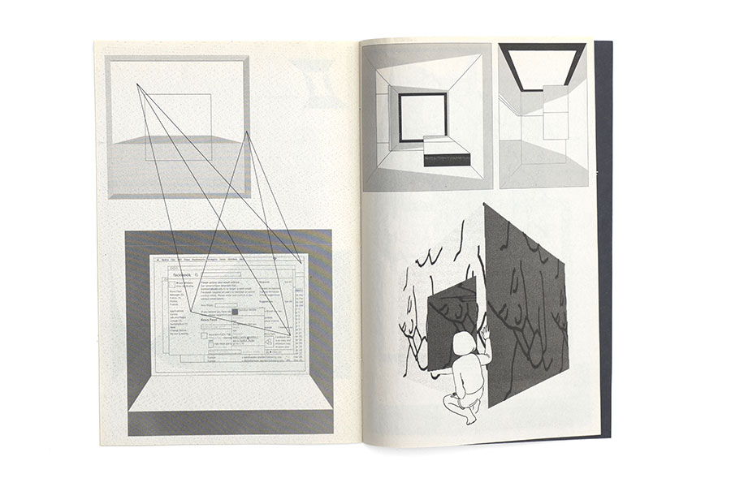

Index of https://blaiselarmee.com/anthologies/
[parent directory]



![Mould Map 3 is an anthology edited by Hugh Frost and Leon Sadler featuring Blaise Larmee, Aidan Koch, Amalia Ulman, Angie Wang, Ben Mendelewicz, Brenna Murphy, CF, Cody Cobb, Daniel Swan, Dmitry Sergeev, Gabriel Corbera, GHXYK2, Hugh Frost, Jacob Ciocci, James Jarvis, Joseph Kelly, Jonas Delaborde, Jonathan Chandler, Jonny Negron, Julien Ceccaldi, Karn Piana, Kilian Eng, Lala Albert, Lando, Leon Sadler, Matthew Lock, Noel Freibert, Olivier Schrauwen, Robert Beatty, Sam Alden, Sammy Harkham, Simon Hanselmann, Stefan Sadler, Viktor Hachmang and Yuichi Yokoyama. It was published by Landfill Editions in 2014 in an edition of 1500. It is 224 pages, A4 (8.3 by 11.7 inches), bound with glue, and offset printed. The posters are by Kilian Eng, Gabriel Corbera and Ben Mendelewicz.](s/mould-map-3-01.jpg)
![Mould Map 3 is an anthology edited by Hugh Frost and Leon Sadler featuring Blaise Larmee, Aidan Koch, Amalia Ulman, Angie Wang, Ben Mendelewicz, Brenna Murphy, CF, Cody Cobb, Daniel Swan, Dmitry Sergeev, Gabriel Corbera, GHXYK2, Hugh Frost, Jacob Ciocci, James Jarvis, Joseph Kelly, Jonas Delaborde, Jonathan Chandler, Jonny Negron, Julien Ceccaldi, Karn Piana, Kilian Eng, Lala Albert, Lando, Leon Sadler, Matthew Lock, Noel Freibert, Olivier Schrauwen, Robert Beatty, Sam Alden, Sammy Harkham, Simon Hanselmann, Stefan Sadler, Viktor Hachmang and Yuichi Yokoyama. It was published by Landfill Editions in 2014 in an edition of 1500. It is 224 pages, A4 (8.3 by 11.7 inches), bound with glue, and offset printed. The posters are by Kilian Eng, Gabriel Corbera and Ben Mendelewicz.](s/mould-map-3-02.jpg)
![Limner 2 is an anthology edited by Alice Lindsay and Peter Willis featuring Blaise Larmee, Jordan Chatwin, Colin David Stewart, Peter Willis, Penny Klein, Murray O'Grady, Stine Belden Røed, Grace Helmer, Jay Cover, Holly Mills, Reena Makwana, Kai Nodland, Reuben Mwaura, Joe Kessler, Liv Taylor, Eric Timothy Carson, Charlotte Mei, Umberto Eco, Ella Mclean, Florence Shaw, Nick White, Alice Lindsay, Good Press, Joakim Ojanen, Mike Redmond, Jon Pilkington, Chie Miyazaki, Lisa Wilkens, Rose Blake, Megan Woof, Dan Shapiro and Isabella Toledo. It was published by Studio Operative in 2013. It is 168 pages, 4.7 by 6.7 inches, bound with thread, and offset printed.](s/limner-2-01.jpg)
![Limner 2 is an anthology edited by Alice Lindsay and Peter Willis featuring Blaise Larmee, Jordan Chatwin, Colin David Stewart, Peter Willis, Penny Klein, Murray O'Grady, Stine Belden Røed, Grace Helmer, Jay Cover, Holly Mills, Reena Makwana, Kai Nodland, Reuben Mwaura, Joe Kessler, Liv Taylor, Eric Timothy Carson, Charlotte Mei, Umberto Eco, Ella Mclean, Florence Shaw, Nick White, Alice Lindsay, Good Press, Joakim Ojanen, Mike Redmond, Jon Pilkington, Chie Miyazaki, Lisa Wilkens, Rose Blake, Megan Woof, Dan Shapiro and Isabella Toledo. It was published by Studio Operative in 2013. It is 168 pages, 4.7 by 6.7 inches, bound with thread, and offset printed.](s/limner-2-02.jpg)
![Limner 2 is an anthology edited by Alice Lindsay and Peter Willis featuring Blaise Larmee, Jordan Chatwin, Colin David Stewart, Peter Willis, Penny Klein, Murray O'Grady, Stine Belden Røed, Grace Helmer, Jay Cover, Holly Mills, Reena Makwana, Kai Nodland, Reuben Mwaura, Joe Kessler, Liv Taylor, Eric Timothy Carson, Charlotte Mei, Umberto Eco, Ella Mclean, Florence Shaw, Nick White, Alice Lindsay, Good Press, Joakim Ojanen, Mike Redmond, Jon Pilkington, Chie Miyazaki, Lisa Wilkens, Rose Blake, Megan Woof, Dan Shapiro and Isabella Toledo. It was published by Studio Operative in 2013. It is 168 pages, 4.7 by 6.7 inches, bound with thread, and offset printed.](s/limner-2-03.jpg) 

![Mould Map 2 is an anthology edited by Hugh Frost and Leon Sadler featuring Blaise Larmee, Will Sweeney, Shary Boyle, Jaakko Pallasvuo, Viktor Hachmang, Karn Piana, Susumu Mukai, Travess Smalley, Raphael Garnier, Jonny Negron, Marijpol, Samara Scott, Sister Arrow, Tom Sewell, Rui Tenreiro, Will Simpson, Hugh Frost, Leon Sadler, Singeon Waters, Tristram Lansdowne, Christopher Norris, Stefan Sadler and Panayiotis Terzis. It was published by Landfill Editions in 2011 in an edition of 1000. It is 24 pages, A3 (11.7 by 16.5 inches), bound with staples, and offset printed. Includes 1 x A4, 1 x A5 prints and 5 x A6 prints](s/mould-map-2-01.jpg) 

 

![Taffy Hips 8 is an anthology edited by Zara Messano and Gil Gentile featuring Blaise Larmee, Magic Sweater, Gil Gentile, Jesse McManus, Austin English, CF, Allen Riley, Edie Fake, Zara Messano, Garrett Young, Shalo P., Sam Gaskin, Santiago Grijalva Bustamante, Vanessa Davis, Clara Bessijelle, Jason Overby, Inés, Alan Resnick, Patrick Kain, Jesse Moynihan, Lala Albert and Gabe Fowler. It was published by Zara Messano and Gil Gentile in 2010 in an edition of 100. It is 60 pages, half legal (7 by 8.5 inches), bound with thread, and xerograph and screen printed. The cover is by Marie Blanchard. The posters are by Gil Gentile.](s/taffy-hips-8-01.jpg)
![Taffy Hips 8 is an anthology edited by Zara Messano and Gil Gentile featuring Blaise Larmee, Magic Sweater, Gil Gentile, Jesse McManus, Austin English, CF, Allen Riley, Edie Fake, Zara Messano, Garrett Young, Shalo P., Sam Gaskin, Santiago Grijalva Bustamante, Vanessa Davis, Clara Bessijelle, Jason Overby, Inés, Alan Resnick, Patrick Kain, Jesse Moynihan, Lala Albert and Gabe Fowler. It was published by Zara Messano and Gil Gentile in 2010 in an edition of 100. It is 60 pages, half legal (7 by 8.5 inches), bound with thread, and xerograph and screen printed. The cover is by Marie Blanchard. The posters are by Gil Gentile.](s/taffy-hips-8-02.jpg)
![Studygroup12 4 is an anthology edited by Zack Soto featuring Blaise Larmee, Trevor Alixopulos, T Edward Bak, Chris Cilla, Max Clotfelter, Farel Dalrymple, Eleanor Davis, Vanessa Davis, Michael Deforge, Theo Ellsworth, Jason Fisher, Nick Gazin, Richard Hahn, Levon Jihanian, Aidan Koch, Amy Kuttab, Corey Lewis, Kiyoshi Nakazawa, Tom Neely, Jennifer Parks, Karn Piana, Jim Rugg, Tim Root, Zack Soto, Ian Sundahl, Jon Vermilyea, Angie Wang, Steve Weissman and Dan Zettwoch. It was published by Zack Soto and Jason Leivian in 2010 in an edition of 500. It is 232 pages, 9 by 12 inches, bound with glue, and offset and screen printed.](s/studygroup12-4-02.jpg)
![Abstract Comics is an anthology edited by Andrei Molotiu featuring Blaise Larmee, R. Crumb, Victor Moscoso, Spyros Horemis, Jeff Zenick, Bill Shut, Patrick McDonnell, Mark Badger, Benoit Joly, Bill Boichel, Gary Panter, Damien Jay, Ibn al Rabin, Lewis Trondheim, Andy Bleck, Mark Staff Brandl, Andrei Molotiu, Anders Pearson, Derik Badman, Grant Thomas, Casey Camp, Henrik Rehr, James Kochalka, John Hankiewicz, Mike Getsiv, J.R. Williams, Warren Craghead III, Janusz Jaworski, Richard Hahn, Geoff Grogan, Panayiotis Terzis, Mark Gonyea, Greg Shaw, Alexey Sokolin, Jason Overby, Bruno Schaub, Draw, Jason T. Miles, Elijah Brubaker, Noah Berlatsky, Tim Gaze, troylloyd and Billy Mavreas. It was published by Fantagraphics in 2009. It is 232 pages, 8.9 by 11.3 inches, bound with thread, and offset printed.](s/abstract-comics-01.jpg)
![Abstract Comics is an anthology edited by Andrei Molotiu featuring Blaise Larmee, R. Crumb, Victor Moscoso, Spyros Horemis, Jeff Zenick, Bill Shut, Patrick McDonnell, Mark Badger, Benoit Joly, Bill Boichel, Gary Panter, Damien Jay, Ibn al Rabin, Lewis Trondheim, Andy Bleck, Mark Staff Brandl, Andrei Molotiu, Anders Pearson, Derik Badman, Grant Thomas, Casey Camp, Henrik Rehr, James Kochalka, John Hankiewicz, Mike Getsiv, J.R. Williams, Warren Craghead III, Janusz Jaworski, Richard Hahn, Geoff Grogan, Panayiotis Terzis, Mark Gonyea, Greg Shaw, Alexey Sokolin, Jason Overby, Bruno Schaub, Draw, Jason T. Miles, Elijah Brubaker, Noah Berlatsky, Tim Gaze, troylloyd and Billy Mavreas. It was published by Fantagraphics in 2009. It is 232 pages, 8.9 by 11.3 inches, bound with thread, and offset printed.](s/abstract-comics-02.jpg)
![Mould Map 3 is an anthology edited by Hugh Frost and Leon Sadler featuring Blaise Larmee, Aidan Koch, Amalia Ulman, Angie Wang, Ben Mendelewicz, Brenna Murphy, CF, Cody Cobb, Daniel Swan, Dmitry Sergeev, Gabriel Corbera, GHXYK2, Hugh Frost, Jacob Ciocci, James Jarvis, Joseph Kelly, Jonas Delaborde, Jonathan Chandler, Jonny Negron, Julien Ceccaldi, Karn Piana, Kilian Eng, Lala Albert, Lando, Leon Sadler, Matthew Lock, Noel Freibert, Olivier Schrauwen, Robert Beatty, Sam Alden, Sammy Harkham, Simon Hanselmann, Stefan Sadler, Viktor Hachmang and Yuichi Yokoyama. It was published by Landfill Editions in 2014 in an edition of 1500. It is 224 pages, A4 (8.3 by 11.7 inches), bound with glue, and offset printed. The posters are by Kilian Eng, Gabriel Corbera and Ben Mendelewicz.](o/mould-map-3-01.jpg)
![Mould Map 3 is an anthology edited by Hugh Frost and Leon Sadler featuring Blaise Larmee, Aidan Koch, Amalia Ulman, Angie Wang, Ben Mendelewicz, Brenna Murphy, CF, Cody Cobb, Daniel Swan, Dmitry Sergeev, Gabriel Corbera, GHXYK2, Hugh Frost, Jacob Ciocci, James Jarvis, Joseph Kelly, Jonas Delaborde, Jonathan Chandler, Jonny Negron, Julien Ceccaldi, Karn Piana, Kilian Eng, Lala Albert, Lando, Leon Sadler, Matthew Lock, Noel Freibert, Olivier Schrauwen, Robert Beatty, Sam Alden, Sammy Harkham, Simon Hanselmann, Stefan Sadler, Viktor Hachmang and Yuichi Yokoyama. It was published by Landfill Editions in 2014 in an edition of 1500. It is 224 pages, A4 (8.3 by 11.7 inches), bound with glue, and offset printed. The posters are by Kilian Eng, Gabriel Corbera and Ben Mendelewicz.](o/mould-map-3-02.jpg)
![Limner 2 is an anthology edited by Alice Lindsay and Peter Willis featuring Blaise Larmee, Jordan Chatwin, Colin David Stewart, Peter Willis, Penny Klein, Murray O'Grady, Stine Belden Røed, Grace Helmer, Jay Cover, Holly Mills, Reena Makwana, Kai Nodland, Reuben Mwaura, Joe Kessler, Liv Taylor, Eric Timothy Carson, Charlotte Mei, Umberto Eco, Ella Mclean, Florence Shaw, Nick White, Alice Lindsay, Good Press, Joakim Ojanen, Mike Redmond, Jon Pilkington, Chie Miyazaki, Lisa Wilkens, Rose Blake, Megan Woof, Dan Shapiro and Isabella Toledo. It was published by Studio Operative in 2013. It is 168 pages, 4.7 by 6.7 inches, bound with thread, and offset printed.](o/limner-2-01.jpg)
![Limner 2 is an anthology edited by Alice Lindsay and Peter Willis featuring Blaise Larmee, Jordan Chatwin, Colin David Stewart, Peter Willis, Penny Klein, Murray O'Grady, Stine Belden Røed, Grace Helmer, Jay Cover, Holly Mills, Reena Makwana, Kai Nodland, Reuben Mwaura, Joe Kessler, Liv Taylor, Eric Timothy Carson, Charlotte Mei, Umberto Eco, Ella Mclean, Florence Shaw, Nick White, Alice Lindsay, Good Press, Joakim Ojanen, Mike Redmond, Jon Pilkington, Chie Miyazaki, Lisa Wilkens, Rose Blake, Megan Woof, Dan Shapiro and Isabella Toledo. It was published by Studio Operative in 2013. It is 168 pages, 4.7 by 6.7 inches, bound with thread, and offset printed.](o/limner-2-02.jpg)
![Limner 2 is an anthology edited by Alice Lindsay and Peter Willis featuring Blaise Larmee, Jordan Chatwin, Colin David Stewart, Peter Willis, Penny Klein, Murray O'Grady, Stine Belden Røed, Grace Helmer, Jay Cover, Holly Mills, Reena Makwana, Kai Nodland, Reuben Mwaura, Joe Kessler, Liv Taylor, Eric Timothy Carson, Charlotte Mei, Umberto Eco, Ella Mclean, Florence Shaw, Nick White, Alice Lindsay, Good Press, Joakim Ojanen, Mike Redmond, Jon Pilkington, Chie Miyazaki, Lisa Wilkens, Rose Blake, Megan Woof, Dan Shapiro and Isabella Toledo. It was published by Studio Operative in 2013. It is 168 pages, 4.7 by 6.7 inches, bound with thread, and offset printed.](o/limner-2-03.jpg)
![Mould Map 2 is an anthology edited by Hugh Frost and Leon Sadler featuring Blaise Larmee, Will Sweeney, Shary Boyle, Jaakko Pallasvuo, Viktor Hachmang, Karn Piana, Susumu Mukai, Travess Smalley, Raphael Garnier, Jonny Negron, Marijpol, Samara Scott, Sister Arrow, Tom Sewell, Rui Tenreiro, Will Simpson, Hugh Frost, Leon Sadler, Singeon Waters, Tristram Lansdowne, Christopher Norris, Stefan Sadler and Panayiotis Terzis. It was published by Landfill Editions in 2011 in an edition of 1000. It is 24 pages, A3 (11.7 by 16.5 inches), bound with staples, and offset printed. Includes 1 x A4, 1 x A5 prints and 5 x A6 prints](o/mould-map-2-01.jpg)

![Taffy Hips 8 is an anthology edited by Zara Messano and Gil Gentile featuring Blaise Larmee, Magic Sweater, Gil Gentile, Jesse McManus, Austin English, CF, Allen Riley, Edie Fake, Zara Messano, Garrett Young, Shalo P., Sam Gaskin, Santiago Grijalva Bustamante, Vanessa Davis, Clara Bessijelle, Jason Overby, Inés, Alan Resnick, Patrick Kain, Jesse Moynihan, Lala Albert and Gabe Fowler. It was published by Zara Messano and Gil Gentile in 2010 in an edition of 100. It is 60 pages, half legal (7 by 8.5 inches), bound with thread, and xerograph and screen printed. The cover is by Marie Blanchard. The posters are by Gil Gentile.](o/taffy-hips-8-01.jpg)
![Taffy Hips 8 is an anthology edited by Zara Messano and Gil Gentile featuring Blaise Larmee, Magic Sweater, Gil Gentile, Jesse McManus, Austin English, CF, Allen Riley, Edie Fake, Zara Messano, Garrett Young, Shalo P., Sam Gaskin, Santiago Grijalva Bustamante, Vanessa Davis, Clara Bessijelle, Jason Overby, Inés, Alan Resnick, Patrick Kain, Jesse Moynihan, Lala Albert and Gabe Fowler. It was published by Zara Messano and Gil Gentile in 2010 in an edition of 100. It is 60 pages, half legal (7 by 8.5 inches), bound with thread, and xerograph and screen printed. The cover is by Marie Blanchard. The posters are by Gil Gentile.](o/taffy-hips-8-02.jpg)
![Studygroup12 4 is an anthology edited by Zack Soto featuring Blaise Larmee, Trevor Alixopulos, T Edward Bak, Chris Cilla, Max Clotfelter, Farel Dalrymple, Eleanor Davis, Vanessa Davis, Michael Deforge, Theo Ellsworth, Jason Fisher, Nick Gazin, Richard Hahn, Levon Jihanian, Aidan Koch, Amy Kuttab, Corey Lewis, Kiyoshi Nakazawa, Tom Neely, Jennifer Parks, Karn Piana, Jim Rugg, Tim Root, Zack Soto, Ian Sundahl, Jon Vermilyea, Angie Wang, Steve Weissman and Dan Zettwoch. It was published by Zack Soto and Jason Leivian in 2010 in an edition of 500. It is 232 pages, 9 by 12 inches, bound with glue, and offset and screen printed.](o/studygroup12-4-02.jpg)
![Abstract Comics is an anthology edited by Andrei Molotiu featuring Blaise Larmee, R. Crumb, Victor Moscoso, Spyros Horemis, Jeff Zenick, Bill Shut, Patrick McDonnell, Mark Badger, Benoit Joly, Bill Boichel, Gary Panter, Damien Jay, Ibn al Rabin, Lewis Trondheim, Andy Bleck, Mark Staff Brandl, Andrei Molotiu, Anders Pearson, Derik Badman, Grant Thomas, Casey Camp, Henrik Rehr, James Kochalka, John Hankiewicz, Mike Getsiv, J.R. Williams, Warren Craghead III, Janusz Jaworski, Richard Hahn, Geoff Grogan, Panayiotis Terzis, Mark Gonyea, Greg Shaw, Alexey Sokolin, Jason Overby, Bruno Schaub, Draw, Jason T. Miles, Elijah Brubaker, Noah Berlatsky, Tim Gaze, troylloyd and Billy Mavreas. It was published by Fantagraphics in 2009. It is 232 pages, 8.9 by 11.3 inches, bound with thread, and offset printed.](o/abstract-comics-01.jpg)
![Abstract Comics is an anthology edited by Andrei Molotiu featuring Blaise Larmee, R. Crumb, Victor Moscoso, Spyros Horemis, Jeff Zenick, Bill Shut, Patrick McDonnell, Mark Badger, Benoit Joly, Bill Boichel, Gary Panter, Damien Jay, Ibn al Rabin, Lewis Trondheim, Andy Bleck, Mark Staff Brandl, Andrei Molotiu, Anders Pearson, Derik Badman, Grant Thomas, Casey Camp, Henrik Rehr, James Kochalka, John Hankiewicz, Mike Getsiv, J.R. Williams, Warren Craghead III, Janusz Jaworski, Richard Hahn, Geoff Grogan, Panayiotis Terzis, Mark Gonyea, Greg Shaw, Alexey Sokolin, Jason Overby, Bruno Schaub, Draw, Jason T. Miles, Elijah Brubaker, Noah Berlatsky, Tim Gaze, troylloyd and Billy Mavreas. It was published by Fantagraphics in 2009. It is 232 pages, 8.9 by 11.3 inches, bound with thread, and offset printed.](o/abstract-comics-02.jpg)